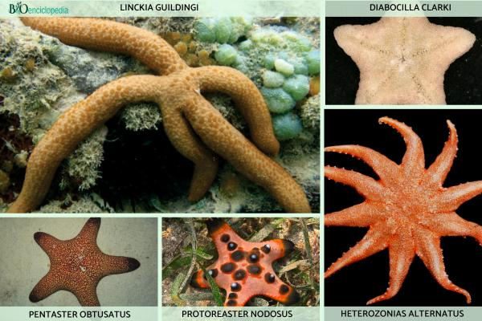

| SEAHORSE |
“Cuando hablamos de los asteroideos, nos imaginamos el universo y las estrellas que vemos en el cielo, pero se trata de animales que viven en el mar desde hace 480 millones de años, desde los abismos hasta las costas”.
Estas criaturas, añadió la académica universitaria, presentan en la parte superior de su cuerpo texturas que pueden ser lisas y aterciopeladas, ásperas y espinosas, o con superficies granulares que semejan una lija. Existen más de 2 mil especies distribuidas en todos los mares del planeta; en México, hay una variedad de 185 especies.
Su cuerpo es estrellado; regularmente tienen cinco brazos, pero algunas especies pueden llegar a tener hasta 10 o 30. Si un depredador les corta un brazo, este se puede regenerar por completo, siempre y cuando cada fragmento contenga una porción del disco central.
Si por alguna razón su brazo se parte a la mitad, cada parte se convierte en un solo brazo. “Muchas veces hasta se pueden cortar en pedacitos y de cada uno crece una nueva estrella”.
